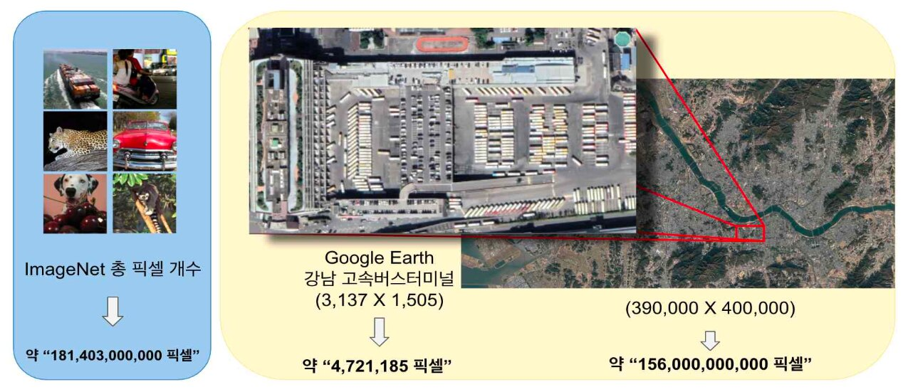
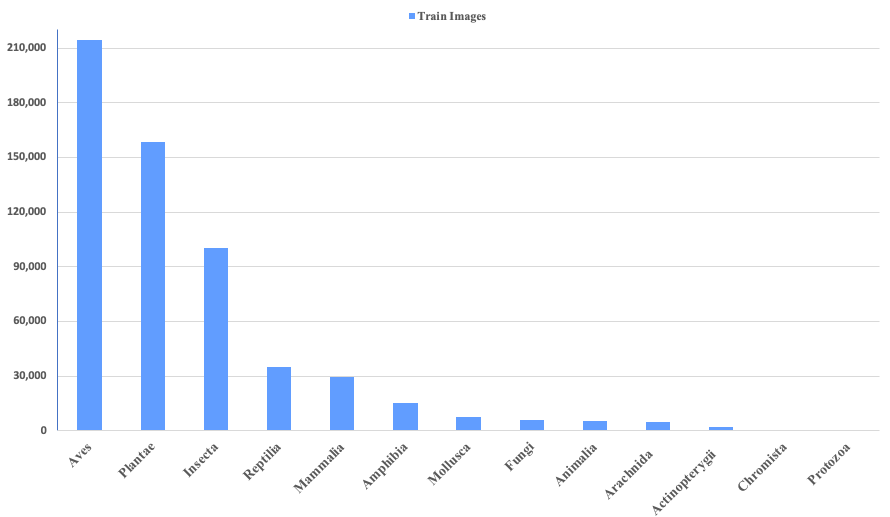
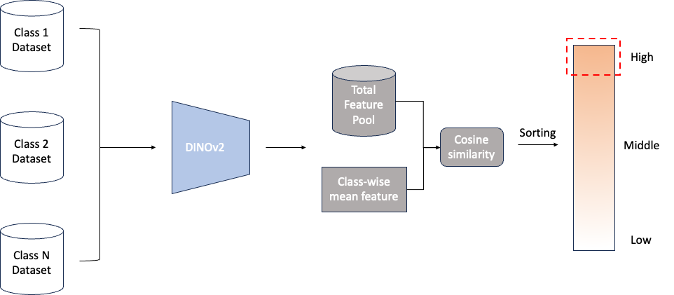
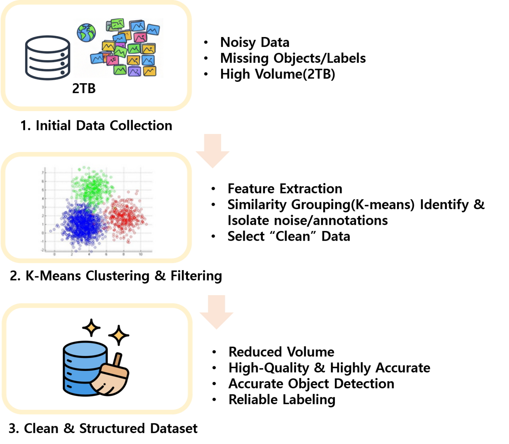
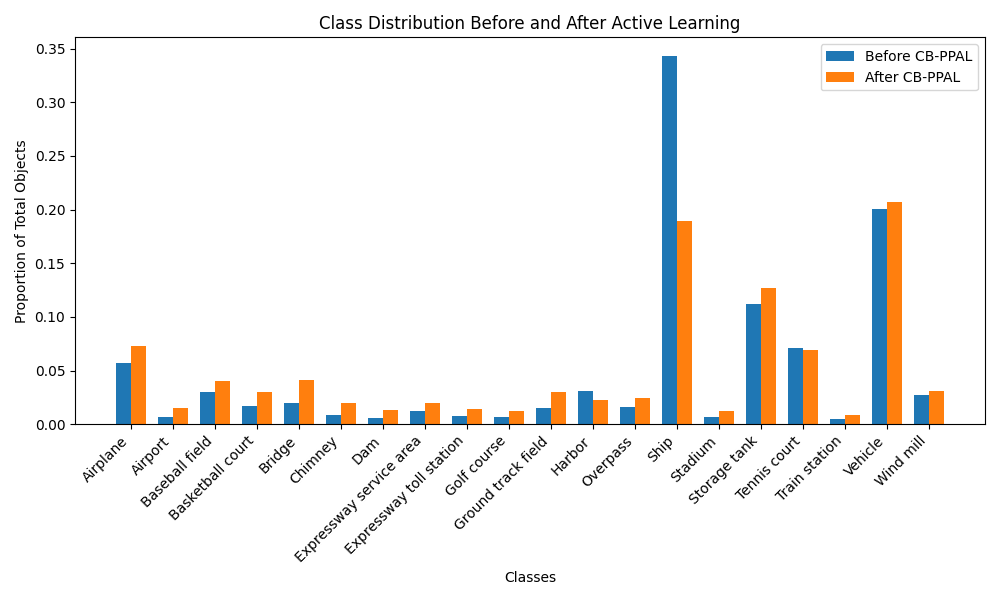

위성 영상 롱테일 문제 해결을 위한 이미지 검색 기반 능동 학습법
초고해상도 위성 영상의 극심한 롱테일(long-tail) 클래스 불균형을 해결하기 위해, 이미지 검색(image retrieval)을 능동적 학습(active learning)에 결합한 데이터 큐레이션 프레임워크를 개발하고 2테라픽셀 규모의 실제 위성 영상으로 실증한 3개년 연구.
Overview
구글어스 등 상업용 위성 영상 플랫폼의 대중화로 딥러닝 기반 위성 영상 분석이 활발히 연구되고 있다. 그러나 위성 영상은 기가픽셀(Gigapixel) 단위의 초대용량 이미지로, 자동차·항공기 같은 관심 객체가 전체 영상에서 차지하는 비중이 극히 작아 수동 판독의 효율이 낮다. 국내는 KARI·한화시스템·쎄트렉아이 등이 위성 시스템을 구축하고 있으나 학습 데이터셋 규모가 부족하고, 특수 목적 위성 영상은 한 장의 확보 비용이 매우 높아 데이터 확보·관리 부담이 크다.
특히 현실 데이터는 일부 다수 클래스(head)에 데이터가 집중되고 소수 클래스(tail)는 극소수만 존재하는 롱테일 분포를 가진다. 일반 객체 검출 데이터셋 VOC2012에서 전경 객체가 전체의 약 29.75%를 차지하는 반면, 위성 영상 데이터셋 iSAID에서는 2.85%에 불과할 만큼 위성 도메인에서 불균형이 더욱 극심하다. 본 연구는 데이터 전수 검사, 합성 데이터, 의사 라벨(pseudo-label), 표준 능동 학습 등 기존 접근법이 극단적 롱테일 환경에서 갖는 한계를 극복하기 위해, 희귀 객체 중심의 이미지 검색 기반 능동적 학습법을 제안하는 것을 목표로 한다.


Approach
- 1차년도 — 이미지 검색 기반 샘플링(분류): 자가지도학습(self-supervised) 기반 비전 모델(DINO 계열)의 특징을 활용해, 클래스 대표 특징과의 유사도로 학습에 유용한 희귀 샘플을 선별하는 이미지 검색 기반 능동 학습을 설계하고, 롱테일 데이터셋(iNaturalist2017)에서 기존 능동 학습 SOTA(PT4AL 등)와 비교.
- 2차년도 — 객체 검출로 확장: 검색 기반 샘플링을 위성 객체 검출 데이터셋(DIOR)으로 확장하고, 객체 검출용 능동 학습(PPAL)을 클래스 불균형 관점으로 개선한 CB-PPAL(Class-Balanced PPAL)을 제안. 검출 난이도와 클래스 빈도를 함께 고려해 소수 클래스 샘플에 가중치를 부여하고, 다양성까지 반영하도록 샘플을 선택.
- 3차년도 — 대규모 실증 데이터 구축: 공개 지도 타일 서비스로 아시아·유럽·미국 다지역의 위성 영상을 약 300만 장 규모로 수집하고, MTP(Multi-Task Pretraining) 등 사전학습 모델로 pseudo-label을 자동 생성. DINO 계열 특징 기반 필터링으로 고품질 클린셋(약 8만 장)을 선별하는 자동 라벨링 파이프라인을 구성.
Methods & Tech


Results
1차년도(분류). iNaturalist2017에서 검색 기반 서브셋을 ResNet18로 학습한 결과, 10% 샘플링에서 능동 학습 SOTA 대비 전체 카테고리 평균 13.57% 성능 향상을 보였으며, 하위 빈도 카테고리에서 최대 65.75% 향상을 기록했다. 20% 샘플링에서도 평균 13.61% 향상, 하위 10% 카테고리에서 73.7% 향상으로 목표였던 5% 향상을 크게 상회했다. 정성적으로 기존 방법이 head 카테고리에 예측이 집중된 반면 제안 방법은 tail 카테고리까지 정확히 예측했다.

2차년도(검출). DIOR에서 RetinaNet으로 CB-PPAL을 적용해 초기 10%부터 매 라운드 10%씩 5라운드 학습한 결과, head 클래스('ship') 비중이 줄고 tail 클래스 비중이 뚜렷이 증가해 클래스 균형 샘플링 효과를 확인했다.
3차년도(대규모 실증). 79,854장 고품질 클린셋 학습에서 기존 PPAL의 bbox mAP 45.4% 대비 CB-PPAL은 50.9%를 달성해 약 5%p 향상했다. 추가 데이터 확보 후 전체 mAP(IoU 0.50)는 0.726 → 0.774(+6.6%)로 개선되었고, Vehicle 클래스 대규모 증강(36,388 → 147,994)으로 소형 객체 탐지 성능 mAP(small)이 +39.3% 향상되었다. Harbor·Train station·Airport 등 기존 저성능 클래스에서 두드러진 개선이 확인되었다. 자동 레이블링 파이프라인은 수동 어노테이션 비용을 기존 대비 70% 이상 절감할 수 있을 것으로 추정된다.